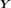
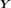

LinearModelResult¶
- class LinearModelResult(*args)¶
Result of a LinearModelAlgorithm.
- Parameters
- inputSample2-d sequence of float
The input sample of a model.
- basis
Basis Functional basis to estimate the trend.
- design
Matrix The design matrix
 .
.- outputSample2-d sequence of float
The output sample of a model.
- metaModel
Function The meta model.
- trendCoefficientssequence of float
The trend coeffients associated to the linearmodel.
- formulastr
The formula description.
- coefficientsNamessequence of str
The coefficients names of the basis.
- sampleResiduals2-d sequence of float
The residual errors.
- standardizedSampleResiduals2-d sequence of float
The normalized residual errors.
- diagonalGramInversesequence of float
The diagonal of the Gram inverse matrix.
- leveragessequence of float
The leverage score.
- cookDistancessequence of float
The cook’s distances.
- sigma2float
The unbiased noise variance.
See also
Methods
Accessor to the Adjusted R-squared test.
getBasis()Accessor to the basis.
Accessor to the object's name.
Accessor to the coefficients of the linear model of the trend.
Accessor to the coefficients names.
Accessor to the coefficients of standard error.
Accessor to the cook's distances.
Accessor to the degrees of freedom.
Accessor to the diagonal gram inverse matrix.
Accessor to the fitted sample.
Accessor to the formula.
getId()Accessor to the object's id.
Accessor to the input sample.
Accessor to the leverages.
Accessor to the metamodel.
getModel()Accessor to the model.
getName()Accessor to the object's name.
Accessor to the noise distribution, ie the underlying distribution of the residual.
Accessor to the output sample.
Accessor to the R-squared test.
Accessor to the relative errors.
Accessor to the residuals.
Accessor to the residuals.
Accessor to the object's shadowed id.
Accessor to the standardized residuals.
Accessor to the object's visibility state.
Returns if intercept is provided in the basis or not.
hasName()Test if the object is named.
Test if the object has a distinguishable name.
setMetaModel(metaModel)Accessor to the metamodel.
setModel(model)Accessor to the model.
setName(name)Accessor to the object's name.
setRelativeErrors(relativeErrors)Accessor to the relative errors.
setResiduals(residuals)Accessor to the residuals.
setShadowedId(id)Accessor to the object's shadowed id.
setVisibility(visible)Accessor to the object's visibility state.
- __init__(*args)¶
- getAdjustedRSquared()¶
Accessor to the Adjusted R-squared test.
- Returns
- adjustedRSquaredfloat
Not defined when degrees of freedom is null.
- getBasis()¶
Accessor to the basis.
- Returns
- basis
Basis The basis which had been passed to the constructor.
- basis
- getClassName()¶
Accessor to the object’s name.
- Returns
- class_namestr
The object class name (object.__class__.__name__).
- getCoefficientsNames()¶
Accessor to the coefficients names.
- Returns
- coefficientsNames
Description
- coefficientsNames
- getCoefficientsStandardErrors()¶
Accessor to the coefficients of standard error.
- Returns
- standardErrors
Point
- standardErrors
- getDegreesOfFreedom()¶
Accessor to the degrees of freedom.
- Returns
- dofint
Sample size minus basis size, a null value is allowed.
- getDiagonalGramInverse()¶
Accessor to the diagonal gram inverse matrix.
- Returns
- diagonalGramInverse
Point
- diagonalGramInverse
- getFormula()¶
Accessor to the formula.
- Returns
- condensedFormulastr
- getId()¶
Accessor to the object’s id.
- Returns
- idint
Internal unique identifier.
- getInputSample()¶
Accessor to the input sample.
- Returns
- inputSample
Sample The Xsample which had been passed to the constructor.
- inputSample
- getName()¶
Accessor to the object’s name.
- Returns
- namestr
The name of the object.
- getNoiseDistribution()¶
Accessor to the noise distribution, ie the underlying distribution of the residual.
- Returns
- noiseDistribution
Distribution Not defined when degrees of freedom is null.
- noiseDistribution
- getOutputSample()¶
Accessor to the output sample.
- Returns
- outputSample
Sample The Ysample which had been passed to the constructor.
- outputSample
- getRSquared()¶
Accessor to the R-squared test.
- Returns
- rSquaredfloat
- getRelativeErrors()¶
Accessor to the relative errors.
- Returns
- relativeErrors
Point The relative errors defined as follows for each output of the model:
 with  the vector of the
with  the vector of the  model’s values
model’s values
 and
and  the metamodel’s values.
the metamodel’s values.
- relativeErrors
- getResiduals()¶
Accessor to the residuals.
- Returns
- residuals
Point The residual values defined as follows for each output of the model:
 with the model’s values and the
metamodel’s values.
with the model’s values and the
metamodel’s values.
- residuals
- getShadowedId()¶
Accessor to the object’s shadowed id.
- Returns
- idint
Internal unique identifier.
- getStandardizedResiduals()¶
Accessor to the standardized residuals.
- Returns
- standardizedResiduals
Sample
- standardizedResiduals
- getVisibility()¶
Accessor to the object’s visibility state.
- Returns
- visiblebool
Visibility flag.
- hasIntercept()¶
Returns if intercept is provided in the basis or not.
- Returns
- interceptBool
- hasName()¶
Test if the object is named.
- Returns
- hasNamebool
True if the name is not empty.
- hasVisibleName()¶
Test if the object has a distinguishable name.
- Returns
- hasVisibleNamebool
True if the name is not empty and not the default one.
- setModel(model)¶
Accessor to the model.
- Parameters
- model
Function Physical model approximated by a metamodel.
- model
- setName(name)¶
Accessor to the object’s name.
- Parameters
- namestr
The name of the object.
- setRelativeErrors(relativeErrors)¶
Accessor to the relative errors.
- Parameters
- relativeErrorssequence of float
The relative errors defined as follows for each output of the model:
with the vector of the model’s values
and the metamodel’s values.
- setResiduals(residuals)¶
Accessor to the residuals.
- Parameters
- residualssequence of float
The residual values defined as follows for each output of the model:
with the model’s values and the
metamodel’s values.
- setShadowedId(id)¶
Accessor to the object’s shadowed id.
- Parameters
- idint
Internal unique identifier.
- setVisibility(visible)¶
Accessor to the object’s visibility state.
- Parameters
- visiblebool
Visibility flag.